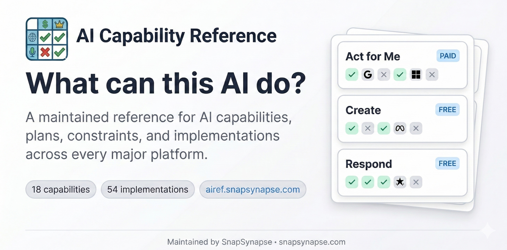

AI Capability Reference
Plain-English reference for AI capabilities, plans, constraints, and implementations — for humans and agents.

What is this?
A single source of truth for answering questions like:
- "Is ChatGPT Agent Mode available on the $8/mo plan?" (No, Plus or higher)
- "Can I use Claude Cowork on Windows?" (Not yet, macOS only)
- "Which open/self-hosted models can I realistically run on my hardware?" (Depends on VRAM)
Built for AI facilitators, educators, developers, and AI agents that need accurate, current information about AI tool availability. Browse the site, query the JSON API, or connect an agent via MCP.
How it's built
There is no database, no framework, and no dependencies. Every piece of data lives in plain markdown and YAML files under data/. A single zero-dependency Node.js script (scripts/build.js) reads those files and generates the entire site — HTML pages, JSON API, bridge pages, sitemap — into docs/.
That's the whole stack: markdown files, one build script, and Git.
Contributing doesn't require a dev environment. You edit a .md or .yml file, open a PR, and CI rebuilds the site. If you can read a markdown table, you can read (and fix) the data. See design/ARCHITECTURE_PATTERNS.md for the full architectural rationale.
What's covered
18 capabilities, 72 implementations, and 9 open-model access records across major consumer AI products and self-hosted runtimes.
All prices are in USD. Availability reflects the United States region by default.
| Product | Provider | Type |
|---|---|---|
| ChatGPT | OpenAI | Hosted |
| Claude | Anthropic | Hosted |
| Copilot | Microsoft | Hosted |
| Gemini | Hosted | |
| Perplexity | Perplexity AI | Hosted |
| Grok | xAI | Hosted |
| Meta (Llama) | Meta | Open model |
| Mistral | Mistral | Open model |
| DeepSeek | DeepSeek | Open model |
| Alibaba (Qwen) | Alibaba | Open model |
| Ollama | Ollama | Runtime |
| LM Studio | LM Studio | Runtime |
Scope criteria and watchlist: design/SCOPE.md, design/WATCHLIST.md.
Features
Site
- Capability-first view — Browse plain-English capabilities as the primary entry point
- Plan-by-plan availability — See exactly which tier unlocks each implementation
- Platform support — Windows, macOS, Linux, iOS, Android, web, terminal, API
- Talking points — Ready-to-use sentences for presentations (click to copy)
- Filtering — By category, price tier, and provider
- Shareable URLs — Filter state and feature permalinks preserved in URL parameters
- Dark/light mode — Toggle for your preference
- 125 bridge pages — Programmatic
/can/,/compare/,/capability/, and/best-for/pages with schema.org structured data
API and agents
- JSON API — 10 stable files at
docs/api/v1/covering all entity types and derived views (usage guide) - MCP server — 15 read-only tools via
scripts/mcp-server.jsfor agent-queryable access (config:mcp.json). Error responses follow the Graceful Boundaries pattern with structured refusal and constructive guidance.
Automation
- Multi-model verification — Weekly four-model cascade cross-checks all data with human review gate
- Link integrity — Weekly URL validation across all evidence sources
- Staleness tracking — Features not re-verified within 7 days are flagged for the next run
Accessibility
This site is designed to meet WCAG 2.1 AA standards:
- Keyboard navigation — Full keyboard support with ↑/↓/j/k to navigate cards, Enter to copy, Tab to move between interactive elements
- Skip link — "Skip to main content" link for screen reader users (visible on focus)
- Focus indicators — Clear 2px accent-colored outlines on all interactive elements
- Color contrast — Minimum 4.5:1 contrast ratio for all text in both light and dark modes
- Reduced motion — Animations and transitions disabled when
prefers-reduced-motionis enabled - Touch targets — Minimum 44px touch targets on mobile for easier tapping
- ARIA attributes — Live regions announce filter count changes, decorative images marked with
aria-hidden - Semantic HTML — Proper heading hierarchy, landmark regions, and button/link semantics
See also: skill-a11y-audit, a companion project that automates WCAG audits as a reusable AI skill.
How data stays current
Twice a week, a four-model cascade queries Gemini, Perplexity, Grok, and Claude to cross-check all tracked features. Models are skipped when verifying their own vendor's products. A change is only flagged when at least three models agree. Nothing is auto-merged — confirmed changes are surfaced as GitHub issues for human review.
Link integrity is checked every Saturday. Features carry a Checked date; anything older than 7 days is prioritized in the next run.
See VERIFICATION.md for full documentation, commands, and API key setup.
Contributing
Found outdated info? Want to add a feature? See CONTRIBUTING.md.
Quick version:
1. Edit the relevant record in data/platforms/, data/model-access/, data/products/, or data/implementations/
2. Include or preserve the evidence source link
3. Run node scripts/sync-evidence.js
4. Run node scripts/validate-ontology.js
5. Submit a PR
Local development
git clone https://github.com/snapsynapse/ai-capability-reference.git
cd ai-capability-reference
node scripts/build.js # Build the site
node scripts/sync-evidence.js # Sync evidence records
node scripts/validate-ontology.js # Validate cross-record integrity
open docs/index.html
Build output:
docs/index.html— Capability homepagedocs/implementations.html— Detailed availability matrixdocs/constraints.html— Access & limitsdocs/compare.html— Side-by-side product comparisondocs/about.html— About pagedocs/api/v1/.json— Machine-readable JSON API (10 files)docs/can//,docs/compare//,docs/capability//,docs/best-for/*/— 125 bridge pagesdocs/sitemap.xml— Dynamic sitemap (131 URLs)
Data format: data/_schema.md. Ontology schema: design/SCHEMA_PROPOSAL.md.
Deployment
The site auto-deploys via GitHub Actions on every push to main and on a scheduled rebuild every Monday and Thursday at 6pm Pacific (1am UTC).
How it works
1. Build job (.github/workflows/build.yml)
- Runs node scripts/build.js to regenerate all pages under docs/
- If output changed, commits it back to main with [skip ci] to prevent loops
- Runs on pushes, PRs (validate only, no commit), and the Mon/Thu schedule
2. Deploy job (same workflow)
- Uploads docs/ folder to GitHub Pages
- Runs on pushes to main and scheduled builds, not PRs
3. FTP deploy (.github/workflows/deploy-ftp.yml)
- Parallel deployment to snapsynapse.com via locked ftp
- Same Mon/Thu schedule plus push-to-main and manual dispatch
- Requires FTP_HOST, FTP_USER, FTP_PASS secrets
GitHub Pages setup
To enable GitHub Pages on a fork:
1. Go to Settings → Pages
2. Under "Build and deployment", select GitHub Actions
3. The workflow will deploy to https://
Design documentation
Architecture, ontology, and project status docs live in design/:
- Knowledge as Code — The development pattern behind this project (research)
- ARCHITECTURE_PATTERNS.md — The nine patterns that compose the system
- ONTOLOGY.md — Core entity types and relationships
- ACCESS_LAYERS.md — SEO, JSON API, and MCP layer design
- ROADMAP.md — Current project status and outstanding work
- WHY_THIS_EXISTS.md — The problem this project was built to solve
- Graceful Boundaries — Specification for structured refusal and constructive guidance, applied to the MCP server's error responses
License
MIT - see LICENSE
Credits
Created by SnapSynapse for the AI community.
With help from Claude Code, of course.
Found an error? Open an issue or submit a PR!